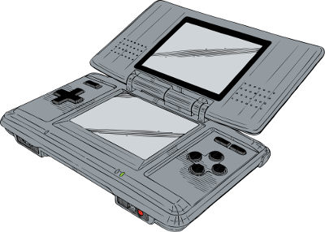
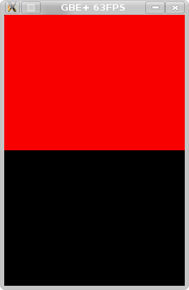

The NDS - My own Final Boss
I've been into emulation for a long time now, ever since my friends introduced me to it around 2001. I absolutely loved playing my favorite games on my computer. In my mind, there was no doubt that it would always be a big part of my gaming lifestyle. However, until a few years ago, I had always been an end-user of emulation, a "player" rather than a programmer. In fact, programming my own emulator never seriously crossed my mind until around 2010 when I was finishing up college. Back then, my interest in playing emulators picked up again, and I really wanted to play some of my DS games on a bigger screen. I found Desmume an acceptable experience, but there was something missing, namely graphical fidelity. In those days, rendering 3D DS games at high resolutions was not a thing, and the Linux versions of Desmume didn't have any decent scaling filters like HQx (and certainly not xBR, since that hadn't been developed yet). The only choice I had was some blurry mess called bilinear filtering, or blocky nearest-neighbor scaling.
For 2D games, I could deal with it, but 3D games looked terrible to me. I tried (somewhat successfully) to hack hi-res support myself, and I fiddled around with hacks to add scaling filters on the Linux version, but it wasn't quite enough for me. It was then that I decided "You know what, whatever. I'm going to make my own DS emulator, somehow, one day." In the emulation community, when someone complains about a particular emulator, sometimes the snide response is "Well, it's open-source. Why don't you improve it yourself or make something else?" In reality, most end-users don't have the time, energy, or necessary skills to invest in such a project. However, being a programmer and an avid gamer, I felt I had the qualifications, so why not try at least?
Eventually, what was once an idle thought in the back of my mind took greater shape. I looked up Game Boy emulation and figured I'd use that as a foothold. I'd start with DMG emulation, work my way into the GBC, and then dive into the GBA. It was a lot of work and effort, and I still have plenty of battles left on those handhelds (especially on the GBA), but all of that has prepared me for my one, true goal: NDS emulation. Maybe I'm way too much of a nerd, but I looked at emulating other consoles as training for my final test, preparation for my encounter with the final boss. I didn't start off with a lot of confidence that I could make it here, but today I'm at last able to say I'm ready to accomplish my goal. I'm ready to conquer the NDS.
This is the first in a series of articles where I will detail my journey periodically. Hopefully it will serve to shed some light on the NDS for others who are curious about emulation or just want to know the nitty-gritty stuff about this wonderful little handheld. A word of warning, however. Since this is the first article, and not much works yet in my emulation core, don't expect a lot of pretty pictures...
Introducing the NDS
So let's get started. What makes the NDS tick? Well, as with any machine of this sort, the CPU needs to be examined before anything else. Unlike its predecessors, the NDS actually has 2 CPUs that operate simulataneously. That's correct, 2 CPUs. Running multiple processors like this isn't actually all that uncommon in other consoles like the SNES, Saturn, Gamecube, or Wii, but this was a first for Nintendo's flagship handhelds. Like the GBA, both CPUs are powered by ARM architectures. The big one is an ARM946E-S running at ~66MHz; the other one is the same CPU found in the GBA - an ARM7TDMI - but now clocked around 33MHz instead of 16MHz. These CPUs are referred to as the ARM9 and ARM7 respectively.
Some of you may be drooling over the thought of how powerful a handheld (circa 2004 anyway) could be with 2 available CPUs, however, each CPU was generally dedicated to specific tasks. That is to say, the ARM9 dealt with video tasks and the bulk of the code while the ARM7 dealt with what could be considered "auxillary tasks" such as sound processing, network communications, touchscreen and microphone input handling, and the real-time clock. A lot of these roles are pretty much set in stone; for example, only the ARM7 has access to touchscreen or microphone input, and only the ARM9 has access to hardware division and square root registers. The NDS exposes certain functionality to one CPU but not the other. While nothing stops both from being used for general computating or game logic, having each carve out their own niches is more effective.
The ARM9 runs on a different microarchitecture from the ARM7. The ARM7 is ARMv4T, and the ARM9 is ARMv5TE. For the most part, this doesn't change much. The instruction sets for ARMv4T and ARMv5TE are pretty identical in most regards, although there are some subtle differences here and there, enough to cause incompatibitiles if not properly handled. As described later, it can lead to some big headaches, as it did in my case. ARMv5TE does add some new ARM instructions (CLZ, QSUB, QADD) but nothing mind-blowing. There is also a spiffy new 5-stage pipeline instead of the previous 3-stage pipeline, but again, no fundamental paradigm shifts as far as emudev is concerned. The two CPUs inside the NDS are very similar to program for and emulate, generally speaking.
On the graphical side of the NDS, the most obvious addition to the system is a secondary screen. Whereas the GBA had a single 240x160 LCD, its successor boasts 2 256x192 LCDs, with the bottom one being a touchscreen. Underneath the hood, the NDS supported new hardware for 3D drawing operations in addition to a pair of 2D engines (one for each screen) that function quite close to the GBA's original capabilities. In fact, a lot of the I/O bits in memory that deal with the 2D engines are exactly the same on the NDS as they are on the GBA. Whatever the GBA could do, so could the NDS (with the exception of a few minor cases, e.g. Green Swap doesn't exist on the NDS). However, the NDS sports a host of improvements over the GBA, such as a new bitmap mode for sprites, extended palettes, support for larger bitmaps, and better ways of drawing a framebuffer to one of the 2D engines. The NDS provides significantly more VRAM compared to the GBA (656KB versus 96KB) so it can drive much more 2D data. That means the top and bottom screens can practically draw two separate 2D scenes, each with its own background layers, sprites, and palettes. Examining the 2D and 3D engines is a topic better left for future articles since those are some pretty heavy subjects.
There are plenty of other extras added the NDS, so I'll keep it short. Instead of relying on per-cartridge chips such as those in Pokemon Ruby, Sapphire, and Emerald on the GBA, the NDS comes with its own real-time clock. Firmware is new to the NDS as well, serving as the default code run at boot-up and as a way to keep track of some user settings. Wireless communication, once an add-on for the GBA, now becomes standard hardware. Sound gains a massive boost on the NDS. Previously, the GBA had to continuously DMA (transfer memory) from a buffer in RAM. That buffer was generally supplied with sound samples generated by the CPU (software mixing). Those two factors meant playing high-quality music took a bite out of the CPU's performance. With the NDS, PCM samples can now be played directly from memory; just load it to RAM and go from there. On the NDS, there are a whopping 16 sound channels as opposed to the GBA's 6. Last but not least, we get two new buttons: X and Y.
The journey begins
That's the NDS in a nutshell. There's so much to this handheld that even the above description doesn't really cover all the system has to offer, but these articles will go over everything in time. For now I'm just going to jump in. With a project as large as the NDS, where does one start emulating? Usually, the best place to begin is at the bottom, and that might mean the CPU for some people. However, consider that the CPU deals a lot with memory operations, such as storing or loading bytes at different locations. A good portion of instructions need access to some sort of memory interface for I/O. When I first began work on my NDS core, I did a few basic things involving memory, such as setting up the memory map (a layout of all the available memory for the emulated system, such a Work RAM, VRAM, ROM data, etc), getting read and write functions set up, and opening and loading an NDS ROM, but the bulk of the work quickly turned to getting the ARM9 and ARM7 CPUs running instructions.
I will note that getting an NDS ROM to load is a bit fancier than the GBA. Commercial NDS games were actually encrypted, but once again, that is something I'll get to later in this series. Each NDS ROM has a header with a bunch of metadata about the game. This is the usual stuff one would expect: game title, game maker code, graphics for the Nintendo logo, a couple of checksums, and a pointer to those icons games always display before you boot them. However, since there are 2 CPUs now, the system can have them start executing code at two different memory addresses. This makes sense because ordinarily you'd program the ARM9 and ARM7 separately, or at least your assembler generates separate code when using something like C++ and libnds. As a result, the ROM header points each CPU where to go when booting. Now about those CPUs...
My plan was to start small, then move on to other, larger portions of the NDS. It seemed pretty daunting to emulate 2 CPUs at the same time, so I decided to see how far I could get emulating just 1 CPU. I figured I could emulate only the ARM9 to get homebrew running, since it seemed like the ARM7 only played a supplementary role. That line of thinking turned out to be completely wrong as I later found out, but this is how I started off. The ARM9 has a 5-stage pipeline instead of a 3-stage pipeline like the ARM7, and I mistakenly thought it would be necessary to emulate every stage individually. With a 3-stage pipeline, the CPU has distinct stages for fetching instructions from memory, decoding instructions, and finally executing instructions. In a 5-stage pipeline, however, the execution stage (where Arithmetic+Logic Unit or ALU does its job) is further broken down into a memory access stage and a write-back stage. The pipeline in the ARM9 follows the classic 5-stage RISC pipeline.

The 5 stages depicted in the order that they operate. (CC BY-SA 3.0 by Poil)
If that sounds like a lot of work to emulate, it is. I tried to emulate this as best as I could, and in fact, my implementation was pretty much complete; I even emulated pipeline stalling. Unfortunately, I chose to get rid of all that code because it wasn't particularly efficient. Trying to emulate all 5 stages would have seriously bogged down performance in the future. Instead, I opted to emulate the 5-stage pipeline as if it were in fact a 3-stage pipeline. That means the memory access and write-back stages get lumped back with the execution stages. The difference should only be a few cycles in some edge cases if done right, but it drastically made CPU emulation much easier. In fact, it was pretty much copy+paste from the GBA ARM emulation code. The end result is that the ARM9 still acts as intended, producing the correct output even if the timing can be slightly off in certain scenarios.
Let me take a moment to talk about accuracy. Some people may be scratching their heads at my decision and saying this isn't really how the hardware works. Yes, this is a shortcut, but my goal isn't to make a cycle-accurate NDS emulator, especially not for my first attempt. The system is so large and complex, making a completely cycle-accurate emulator would easily take a decade out of my life (given how fast I work anyway). I do value cycle-accurate emulators as a means to truly preserve hardware through software, but that just isn't what I'm aiming for here. My intent is to follow projects like Dolphin or PPSSPP: not exactly cycle-accurate, but always moving towards a more accurate emulation experience. I know bugs of all sorts will pop up eventually, and I'm going to get rid of them as best as I can. I mean, what's the point in making an NDS emulator if it isn't accurate enough to play Pokemon?
The first test
Anyway, at this point, my NDS core is finally taking shape. It can load a ROM into memory, and from there, the ARM9 can start executing instructions. Seems like a nice beginning. However, to go anywhere further, we have to make sure all the pieces work. This means making test ROMs and observing the output. While this could be done entirely from the command-line through a debugger, inspecting the state of the CPU at every instruction to ensure proper output, that gets real boring real quickly. Visual output, putting something on your computer screen, that's the exciting stuff. I needed a simple test ROM that did something mundane, like painting the top or bottom screen of the NDS a single color. It needed to be small and limited in scope, so I could go through all of the instructions in case something needed debugging. I could have created a demo through libnds with a couple lines of C++, however, as I'll talk about later, getting homebrew made with libnds to run in an emulator is actually pretty challenging.
A few years ago, I actually stumbled upon a really small ROM made by Imran Nazar. Touted as the smallest NDS file, he assembled a super tiny binary by hand called TinyFB.nds. It runs just a few lines of ARM code to draw a single color to the screen. This looked like the perfect launching point, as the source was provided on his website, and there really wasn't anything complicated going on. To actually draw stuff to the screen, I worked on barebones LCD emulation. TinyFB uses one of the new display modes for the NDS where it reads a framebuffer from a chunk of VRAM. Implementing that proved incredibly easy. All you have to do is read a certain amount of bytes and convert them to 24-bit RGB colors, then draw all of that. Getting that far didn't take much effort, but this meant I was taking my first real steps towards NDS emulation.

I got a file loading, and it makes the screen do things! Time to conquer the world!
Afterwards, I wanted to try running homebrew created with libnds. Being able to use C++ to make test ROMs is incredibly convenient; it allows me to try a whole bunch of features on the NDS without having to make my own library from scratch, and I don't have to resort to ARM assembly. For the record, I have no problem programming in ARM ASM; I really like it, but speed is the key here. I quickly programmed a small NDS ROM that did the exact same thing as TinyFB; it simply wrote a bunch of values to the framebuffer. As it turns out, booting up even such a basic homebrew demo required a great deal of coding. Apparently, libnds does a lot of additional work and accesses a variety of features on the NDS. There were quite a few issues I dealt with, so I'll begin enumerating them all.
The second test
Issue #1 - Emulating the CP15:
The NDS has another chip attached to the ARM9 CPU, a co-processor called the CP15. The CP15 is a sort of helper to the CPU. Its main function is to facilitate memory control, such as access permissions, and setting up the CPU's caches. Getting libnds homebrew in working order meant having some emulation of this co-processor. The CP15 actually controls where the ARM9's IRQ handling code is located which is integral for processing interrupts. Without getting the CP15 to setup this address, the ARM9 can't really execute code correctly. The CP15 actually has a pretty large set of functionalities, however, it wasn't necessary to emulate the whole thing at once. I only implemented a few of the co-processor's abilities, which did the trick; thankfully basic libnds homebrew uses a very small subset under most circumstances, and all of that is concentrated at the beginning of the ROM.
Communication between the ARM9 and CP15 uses a few new ARM instructions, chiefly MCR and MRC for storing and loading values, so they needed to be emulated as well. Actually coding a CP15 primarily involves transferring data back and forth between it and the CPU, which isn't very hard. The CP15 has its own registers, and whenever the ARM9 writes to one, certain actions need to happen, such as setting up the IRQ handling address or flushing a specific cache. Only the ARM9 has access to the CP15; the ARM7 is left out of the party. The ARM7 has a dummy co-processor called the CP14, but that doesn't really do anything.
Issue #2 - Handling Interrupts and the BIOS:
Most software on the NDS is interrupt driven. That means whenever hardware performs certain actions, such as entering VBlank or even drawing on a specified line, it trips an interrupt and signals the program to start running code in response to that event. It's a very important part to emulate; without that much I couldn't go further. Once the CP15 was doing its job in my NDS core, the ARM9 could jump to whenever it needed to service an interrupt. However the ARM9 jumps to the BIOS before jumping to the IRQ handling code. GBATEK provides detailed information about how the GBA BIOS manages interrupts, but not so much about the NDS. I didn't know what the ARM9 did, so I couldn't HLE this. The easiest route was to just load up the BIOS from real hardware. I dumped the file from my original NDS (the so-called "phat" launch model) and wrote a routine to load up in memory. After disassembling the relevant code, the ARM9 BIOS IRQ handling is surprisingly similar to the GBA's:
Issue #3 - Emulating ARM9 and ARM7 instruction differences:
As I said earlier, the ARM9 and ARM7 pretty much use the same instruction sets. The ARM9 has a few new additions, but ARMv5 code is more or less backwards compatible with ARMv4. Except when it's not. A few corner scenarios managed to trip me up. Specifically, in some cases where the ARM instruction for LDR loads a value into the PC (program counter) register. In ARMv4, ARM LDR instructions never switch to THUMB mode, but when loading something into the PC in ARMv5, LDR has the potential to do just that. Changing from ARM mode to THUMB mode is important because the instructions are encoded differently (32-bit vs 16-bit) so the entire program flow gets messed up if this isn't emulated correctly.
Issue #4 - Emulating ARM9 and ARM7 Simultaneously:
This was something I had hoped to put off until later, but I soon discovered that wouldn't be possible. I hacked up Desmume to see what kind of interrupts were being triggered on each CPU. Turns out, the homebrew ROM was firing interrupts on the ARM7, indicating that it was supposed to be doing something. It was time to double-down and really work out how to emulate 2 CPUs side-by-side. Emulating the ARM7TDMI is familiar territory for me; I just had to stick it next to the ARM9. Trying to emulate each cycle on each CPU in parallel seemed like way too much work for possibly little to no benefit; I've heard that the ARM9 and ARM7 aren't tightly synchronized, so there's plenty of wiggle-room here.
In GBE+, only 1 CPU executes instructions at a time. After completing the instruction, it calculates how many cycles have passed before handing control to the other CPU. When booting a ROM, for example, let's say the ARM9 runs for 8 cycles; the emulator makes a note that the ARM9 is now 8 cycles ahead of the ARM7 (remember, the ARM9 runs roughly double the speed of the ARM7, so to the ARM7 the other CPU is really 16 cycles ahead). GBE+ sees that the ARM9 is ahead, so it switches over to the ARM7. The ARM7 runs until it has completed 16 or more cycles. If the ARM7 runs slightly ahead, say 20 cycles, GBE+ makes a note of the balance when switching again. 20 minus 16 equals 4; 4 divided by 2 equals 2, so to the ARM9, the ARM7 appears to be 2 cycles ahead. This cat-and-mouse game of running each CPU separately and switching whenever one catches up to the other actually turned out pretty well. It's relatively simple and efficient from a performance point of view, and in practice neither CPU tends to stray too far from the other. There are some potential pitfalls to this approach, but those arise under the assumption of tight or rapid synchronization.
Speaking of synchronization, Desmume also showed that both CPUs were firing interrupts specifically related to Interprocess Communication, or IPC for short. For the NDS, IPC essentially describes how the two CPUs talk to each other. Each CPU is its own entity, so there needs to be a way to share data. The simplest method involves transferring 4-bits to the other CPU via the IPCSYNC register. The purpose of IPCSYNC is to quickly transfer a small amount of data and optionally raise an interrupt. With that, the two CPUs can exchange limited information in a synchronized manner. Though, as one can imagine, 4-bits isn't a great deal to play around with. You could only send a value of 0 - 15 to the other CPU. The NDS provides a more robust method of pushing data between the CPUs (discussed below). Emulating the IPCSYNC allowed my homebrew test to boot up normally, and it wouldn't crash, but only a black screen appeared. Something else was missing...
Issue #5 - Emulating the IPC FIFO:
I noticed that Desmume said both the ARM9 and ARM7 were also firing two other IPC related interrupts. These interrupts, as I found out, were the result of something called the IPC FIFO. FIFO means First-In, First-Out; it's a way to organize data and generally used for buffering information. Typically, the abstract data type of a FIFO in various programming languages is called a queue or something similar. A FIFO data structure means that the data input first is also the data output first. First come, first serve, just like the lunch lines in school, except there's no cutting.

A visualization of a queue. Stuff that goes in first comes out first (CC BY-SA 3.0 by Vegpuff).
Anyway, each CPU on the NDS has 2 queues. One queue (IPCFIFOSEND) holds values to be sent to the other CPU, the other queue (IPCFIFORECV) holds values received from the other CPU. Each queue holds a maximum of 64 bytes, which is way more than the measly 4-bits available through the IPCSYNC method. Here's an example of how this works in practice. Imagine the ARM9 puts 3 values into its send queue. Those values then appear in the ARM7's receive queue. Every time the ARM7 reads from its receive queue, both the ARM7's receive queue and the ARM9's send queue get rid of oldest value (they "pop" it off the queue) until there's nothing left. Because of this nature, the ARM7's receive queue is essentially the ARM9's send queue, but only the ARM7 can read from it, and only the ARM9 can write to it. Likewise, the ARM9's receive queue is essentially the ARM7's send queue.
These FIFOs have plenty of control bits in memory that detail their current status, such as when they're empty or full, and they can trigger interrupts in those cases. Usually, one CPU will wait for one of these interrupts so it can be notified when the other CPU wants to communicate. The CPU sending the data will wait for another interrupt telling it that the data has been received, and this process goes back and forth as necessary. the IPC FIFO is important simply because the ARM7 deals with a lot of stuff that the ARM9 can't touch. For example, it's common for the ARM7 to read touchscreen input but pass it on to the ARM9.
The IPC FIFO was somewhat daunting at first. It was hard keeping track of which queue was which queue, and I made a lot of silly errors getting the two CPUs mixed up. Overall though, it was pretty straightforward. Most of the work is managing the C++ std::queue data type appropiately and raising the correct interrupt at the right time.
Just getting started
With all of these emulated components in place, I finally got my libnds homebrew test working. No longer did I see a pure black or pure white screen. The top screen was a beautiful red, at last! I was surprised that I had to go through so many hoops just to get a solid color displayed. There were some points where I doubted if I was ready or serious enough to continue. Although I labeled the 5 issues above very clearly, I only discovered them through a lot of debugging.
Even so, I managed to overcome these challenges. Although this is certainly a far cry from running games like Pokemon Diamond and Pearl (#LoveSinnoh), these first steps are pivotal to the rest of the journey. What's small now eventually adds up. You don't get anywhere if you don't move. Even just one tiny step forward each day gets you closer to what you want. That's my mentality towards NDS emulation and probably my philosophy as a programmer.
Next time, I'll discuss some very basic stuff about 2D graphics on the NDS. There is a lot of subject matter to cover there, but I'll stick to simple backgrounds and such. There will definitely be more pretty pictures to look at too!